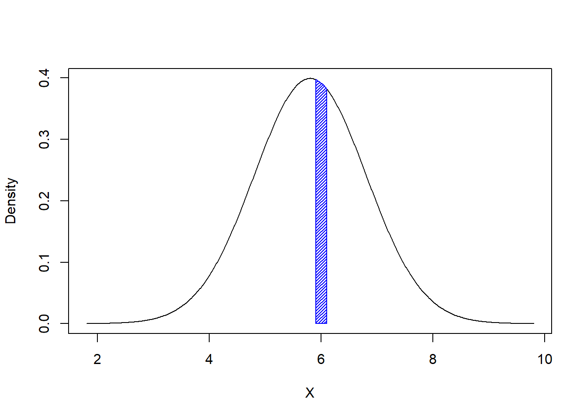

Chapter 7 Functions of Continuous Distributions
7.1 Probability density functions
7.1.1 Summation Doesn’t Work
Let \(X\) be a random variable representing the height in feet of a randomly selected person. What is the probability that \(5.9 \leq X \leq 6.1\)? If \(X\) was discrete we could calculate the probability as a sum: \[\sum_{5.9 \leq x \leq 6.1} p(x)\] This sum doesn’t make sense for a continuous random variable because \(p(x)=0\) for all values of \(x\). Intuitively, if there are infinitely many possible heights than having a height of exactly \(6\) feet is just one of these infinite outcomes and the probability of it happening is \(\frac{1}{\infty}=0\).
7.1.2 Using Integrals
Let’s look at a graph of the probability density function of heights. The probability density function (or PDF) is a special function where the area under the curve represents a probability. This means we use integrals instead of summations for continuous random variables. The area below represents \(P(5.9 \leq X \leq 6.1)\).
 Approximating the area above with a trapezoid: \[\begin{align} P(5.9 \leq X \leq 6.1) &= \int_{5.9}^{6.1} f(x) dx \notag \\ &= \text{base} \cdot \frac{h_1 + h_2}{2} \notag \\ &= (6.1 - 5.9) \cdot \frac{f(5.9) + f(6.1)}{2} \notag \\ &= .2 \cdot \frac{.4+.38}{2} \notag \\ &= .078 \notag \end{align}\]
7.1.3 Defining Probability Density Functions
The function \(p(x)\) we sum in a discrete distribution is a probability mass function and the function \(f(x)\) we integrate in a continuous distribution is a probability density function. This is similar to physics where a single point has no mass but we can integrate the density to find the mass of a region. Note that we us \(p(x)\) for discrete distributions and \(f(x)\) for continuous distributions.
Probability density functions have some special properties. A probability density function can’t be negative because probabilities aren’t negative. The total area under the curve must be \(1\) since the probability of all possible outcomes is \(1\). The integral from \(a\) to \(b\) must calculate \(P(a \leq X \leq b)\).
Definition 7.1 (Properties of PDF)
\(f(x) \geq 0\)
\(\int_{- \infty}^{\infty}f(x) = 1\)
\(\int_{a}^{b}f(x) = P(a \leq X \leq b)\)
7.1.4 Cumulative Distribution Function
As before we define the cumulative distribution function \(F(x) = P(X \leq x)\). For continuous random variables: \[F(b) = \int_{-\infty}^{b}f(x)dx\] It doesn’t matter if inequalities are strict or not for continuous variables because \(P(X \leq x) =P(X<x)\). This is because \(P(X=x)=0\): \[P(X \leq x) = P(X < x) + P(X=x) = P(X<x)+0=P(X<x)\] Here are some useful properties of the CDF:
Definition 7.2 (Properties of CDF)
\(0 \leq F(x) \leq 1\)
\(F(x)\) is an increasing function because the area under the curve increases as the upper bound on the integral moves to the right.
\(P(a \leq X \leq b) = F(b) - F(a)\)
\(P(X \geq a) = 1 - F(a)\)